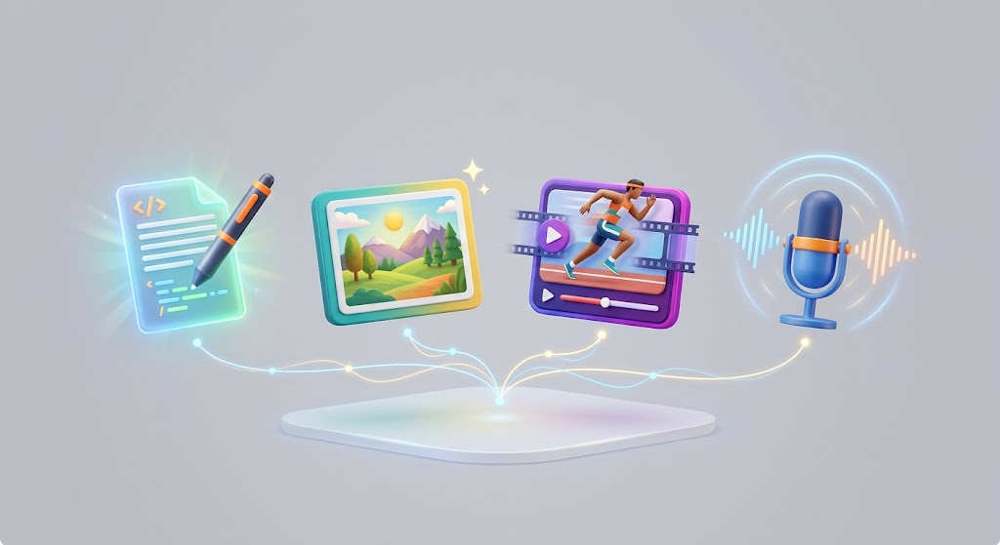

Fundamentos
Qué es la IA y por qué se puede ganar dinero con ella
Antes de hablar de dinero, conviene aclarar algo: la inteligencia artificial de la que habla esta guía no son robots ni ciencia ficción. Son programas que, a partir de un texto que tú escribes (un "prompt"), generan texto, imágenes, vídeo, voz o código. Herramientas como ChatGPT, Claude, Midjourney o Canva con IA son ejemplos de esto.
Lo que ha cambiado en los últimos años es que estas herramientas ya no requieren saber programar para usarlas. Escribes lo que necesitas en lenguaje normal, y la herramienta lo genera. Eso ha abierto la puerta a que cualquier persona, sin formación técnica, pueda producir resultados que antes exigían un profesional especializado.
De dónde sale realmente el dinero
La IA no genera ingresos por sí sola — nadie te va a pagar por "tener" una herramienta de IA abierta. El dinero aparece cuando usas esa herramienta para hacer algo que otra persona o empresa necesita y está dispuesta a pagar. En la práctica, esto se traduce en tres modelos principales:
- Servicios más rápidos o más baratos: ofreces algo que antes tardaba horas (redactar, diseñar, editar vídeo) en una fracción del tiempo, gracias a la IA.
- Productos digitales: creas algo una vez (una plantilla, un ebook, un curso) y lo vendes muchas veces, usando IA para acelerar la producción.
- Automatización para negocios existentes: ayudas a una empresa a ahorrar tiempo o dinero conectando herramientas de IA a sus procesos (atención al cliente, gestión de pedidos, etc.).
La idea clave de todo este sitio: la IA multiplica el valor de tu tiempo o tu conocimiento. No sustituye la necesidad de ofrecer algo útil a alguien.
Por qué ahora hay demanda real
La adopción de IA en empresas ha crecido con fuerza en los últimos dos años, y esa curva sigue subiendo. Eso significa que cada vez hay más negocios que quieren aplicar estas herramientas pero no saben cómo, y están dispuestos a pagar a quien sí sepa — aunque ese conocimiento se pueda aprender en semanas, no en años.
Un poco de historia: cómo hemos llegado hasta aquí
La inteligencia artificial no es un invento de la noche a la mañana. Lleva décadas en desarrollo, pero hasta hace pocos años estaba limitada a laboratorios y grandes empresas tecnológicas. Lo que cambió el panorama fue la llegada de los modelos de lenguaje a gran escala —como los que hay detrás de ChatGPT o Claude— capaces de entender y generar texto con una naturalidad que antes parecía ciencia ficción.
A partir de 2022-2023, estas herramientas empezaron a estar disponibles para cualquier persona con conexión a internet, sin necesidad de conocimientos técnicos ni de pagar licencias caras. Ese es el punto de inflexión real: la IA dejó de ser cosa de programadores para convertirse en una herramienta de uso cotidiano, tan accesible como un buscador web.

Los distintos tipos de IA generativa
Cuando hablamos de "IA" en el contexto de ganar dinero, casi siempre nos referimos a la IA generativa: la que crea contenido nuevo a partir de una instrucción. Conviene distinguir los tipos principales, porque cada uno abre puertas distintas:
- IA de texto: genera redacciones, resúmenes, traducciones o código. Es la más versátil y la más fácil de empezar a usar.
- IA de imagen: crea ilustraciones, fotografías simuladas o diseños a partir de una descripción escrita. Útil para diseño gráfico, marketing y contenido visual.
- IA de vídeo: genera clips cortos, animaciones o avatares parlantes. Es la más reciente y la que más está creciendo en popularidad para redes sociales.
- IA de voz y audio: convierte texto en voz natural, clona voces o genera música. Muy usada en doblaje, pódcasts y contenido audiovisual.
La mayoría de las formas de ganar dinero que veremos en esta guía combinan dos o más de estos tipos: por ejemplo, un vídeo para redes sociales puede usar IA de texto para el guion, IA de voz para la narración y edición asistida por IA para el montaje final.
Por qué las empresas están dispuestas a pagar por esto
Puede parecer que, si las herramientas de IA son tan accesibles, cualquiera podría hacerlo todo por sí mismo sin pagar a nadie. En la práctica no funciona así, por varias razones:
- Falta de tiempo: muchos dueños de pequeños negocios ya están desbordados gestionando su día a día y prefieren pagar a alguien que se encargue de aplicar la IA por ellos.
- Falta de criterio: saber escribir un buen prompt y revisar si el resultado es útil requiere práctica. No es solo "escribir y listo".
- Falta de conocimiento técnico: conectar varias herramientas entre sí (por ejemplo, para automatizar tareas) tiene una curva de aprendizaje que muchas personas prefieren evitar.
Esta combinación —herramientas accesibles pero que requieren tiempo y criterio para aplicarse bien— es exactamente el hueco que ocupa alguien que aprende a usarlas con soltura, y es de donde sale el dinero real, no de la herramienta en sí.
Casos reales de aplicación
Para hacerlo más concreto, así es como distintos perfiles ya están aplicando esto hoy:
Una persona que gestiona redes sociales para pequeños negocios locales puede usar IA de texto para generar ideas de publicaciones y IA de imagen para crear las artes gráficas, reduciendo a la mitad el tiempo que antes dedicaba a cada cliente, y por tanto pudiendo atender a más clientes con el mismo esfuerzo.
Un traductor freelance puede usar IA como primer borrador de una traducción y dedicar su tiempo a revisar y pulir matices culturales y de tono, en vez de traducir palabra por palabra desde cero — esto le permite aceptar más encargos sin bajar la calidad.
Alguien sin experiencia previa en diseño puede crear plantillas de redes sociales para clientes usando herramientas de IA integradas en editores como Canva, ofreciendo un servicio que hace un año habría requerido conocimientos de diseño gráfico.
Lo que la IA no puede hacer por ti
Es importante ser realista: la IA no sustituye la necesidad de entender a un cliente, negociar un precio, gestionar un negocio o mantener una relación de confianza con quien te contrata. Estas habilidades siguen siendo humanas, y de hecho son las que más diferencian a quien tiene éxito con estas herramientas de quien no lo consigue.
La idea clave de todo este sitio: la IA multiplica el valor de tu tiempo o tu conocimiento. No sustituye la necesidad de ofrecer algo útil a alguien, ni la relación humana que hace que un cliente vuelva a contratarte.
Cómo saber si esto es para ti
No hace falta que te apasione la tecnología para beneficiarte de la IA en tu economía personal. Lo que sí ayuda es tener curiosidad para probar cosas nuevas, paciencia para aprender por ensayo y error, y constancia para no abandonar en las primeras semanas, que suelen ser las más lentas en cuanto a resultados.
Si te reconoces en alguno de estos perfiles, tienes más papeletas para que esto te funcione: alguien que ya ofrece un servicio (redacción, diseño, gestión de redes, atención al cliente) y quiere hacerlo más rápido; alguien que quiere generar un ingreso extra sin renunciar a su trabajo actual; o alguien que quiere aprender una habilidad nueva con demanda creciente, aunque parta completamente de cero.
Lo que no funciona bien es acercarse a la IA buscando un atajo mágico sin intención de aprender ni de ofrecer algo de valor a otras personas. Como verás a lo largo de esta guía, el dinero llega cuando resuelves un problema real para alguien, y la IA es simplemente el medio que te permite hacerlo más rápido o con menos esfuerzo del que requería antes.
En el siguiente capítulo verás las formas concretas de convertir todo esto en ingresos, ordenadas de más sencillas a más ambiciosas, con tiempos realistas para cada una.
El ritmo al que sigue evolucionando la IA
Un aspecto que conviene tener presente es que las herramientas de IA generativa cambian de versión con bastante frecuencia, y cada actualización suele traer mejoras notables en la calidad de los resultados. Esto significa que lo que hoy requiere varias revisiones manuales, dentro de unos meses podría necesitar mucha menos intervención humana para el mismo resultado. No es un motivo de preocupación, sino una razón más para empezar a familiarizarte con estas herramientas ahora, en vez de esperar a un momento "ideal" que nunca llega, ya que la curva de aprendizaje que adquieras ahora seguirá siendo útil aunque las herramientas concretas cambien.
Con esta base clara sobre qué es la IA generativa y de dónde sale realmente el dinero cuando se aplica bien, estás listo para pasar a la parte más práctica de esta guía: las formas concretas de convertir este conocimiento en ingresos reales, explicadas paso a paso en el siguiente capítulo.